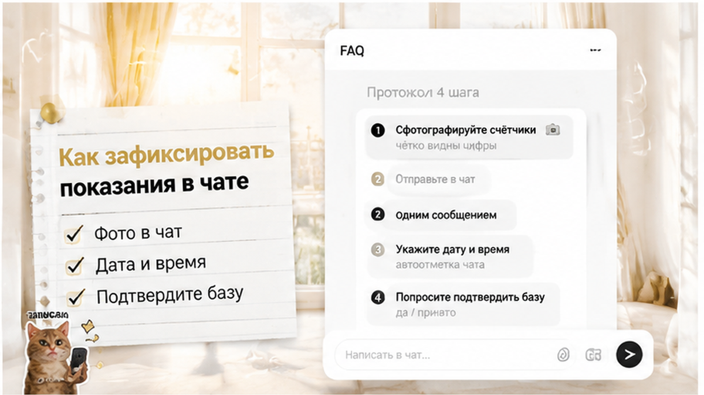

TL;DR. «Коммуналка включена» в объявлении не всегда значит «сколько угодно». Часто в цену суток уже вшита норма воды и света — а всё сверх неё считают по счётчикам на выезде. Без фото показаний при заселении спорить нечем: хозяин назовет «базу», вы не докажете. Снимите все доступные счётчики в день заезда, отправьте в чат с датой, уточните до оплаты, что именно «включено». Ниже — что спрашивать, как считают доплату и что писать, если на выезде прилетел расчёт.
Вы сняли квартиру на три дня. В объявлении чётко: «ЖКХ включено», «коммуналка в цене», «без доплат». Оплатили, заселились, отлично отдохнули. Сдали ключи, сели в такси — и в телефоне сообщение: «Доплата по счётчикам 1 840 ₽. Вода + свет. Скрин расчёта ниже».
Вы вспоминаете: при заезде счётчики не снимали. Плиту и диван — да, из чата B02 все уже знают. Счётчики в ванной и на щитке — нет. А теперь хозяин показывает разницу показаний, которую вы не можете проверить.
Я сдаю посуточно в Тюмени и вижу эту сцену регулярно — не потому что все хозяиены злодеи, а потому что гости не фиксируют старт. Спор не о тарифе, а о том, с чего начали считать.
Три типовые схемы — и все они выглядят в объявлении почти одинаково.
Первое: всё включено без лимита. Редко, обычно в дорогих апартаментах с фиксированной ценой. Хозяин сам платит УК и не пересчитывает гостю. Если так — это должно быть прямым текстом в переписке, не только в заголовке объявления.
Второе: включена норма. Самый частый вариант. В сутки «вшиты», например, 3 м³ воды и 5 кВт·ч света на всех гостей. Сверх — по тарифу счётчиков. Гость думает «включено», хозяин считает «до лимита включено».
Третье: всё по счётчикам. Цена суток — только жильё; вода, свет, иногда газ — отдельно по факту. Честная схема, если вы знали до оплаты. Нечестная — если в объявлении написано «включено», а на выезде вылезает «по счётчикам».
Перед бронированием одна вопрос закрывает половину проблем: «Что именно включено в цену суток и есть ли лимит по воде/свету?» Ответ в чате с датой — ваш документ.
Обход квартиры при заезде — тема залога и плиты; я разбирал это в тексте про залог, который «не вернём» на выезде
Счётчики — продолжение того же обхода, не отдельный ритуал.
Что сфотографировать:
На фото должны читаться цифры и быть видна дата — лучше сразу отправить в чат, а не копить в галерее. Без встречи с хозяином старт фиксируют только в чате — см. разбор бесконтактного заселения в посуточную
Мы этот список дополняем из историй гостей — присылают, что пропустили. На заселении не снимали счётчики и потом доплатили? Напишите в комментариях — поможет другим. Обсуждаем в телеграме: t.me/Dobriy_dom_72. Подписаться в MAX: max.ru/id660300569233_biz — если там удобнее читать короткие разборы.

Фото в галерее телефона — не протокол. Протокол — сообщение в том чате, где бронировали, с датой и временем.
Шаблон одного сообщения:
Ответ хозяина «ок, вижу» — ваша стартовая база. Если молчит — напишите ещё раз: «Подтвердите показания, чтобы на выезде не было споров». Молчание после двух напоминаний — красный флаг на будущее.
Не отправляйте в «другой чат менеджеру» — тот же принцип, что с паспортом: один канал от брони до выезда. Про документы при заселении — в разборе фото паспорта: что законно
Без калькуляторов на три страницы. Логика одна:
(Показание на выезде − показание на заезде) × тариф = сумма по этому счётчику.
Пример: электричество было 4 521, стало 4 548. Разница 27 кВт·ч. Тариф, скажем, 5,2 ₽ — доплата около 140 ₽ только за свет. Вода считается так же по кубам.
Если в цену суток вшита норма — из расчёта вычитают «включённый» объём. Например, 3 м³ воды на все дни уже в цене — считают только сверх. Без переписки о норме вы не узнаете, вычли ли её.
На 2026 году тарифы ЖКХ индексируются — сначала с января, потом регионально с октября. Для спора важен тариф в расчёте хозяина, а не «средний по интернету». Просите: «Укажите тариф по каждой строке».
Четыре сообщения по порядку — коротко, в чат:
Если доплату удерживают из залога без вашего согласия — это пересекается с залоговыми спорами. Там же важны фото при заезде и письменный расчёт. Без стартовых показаний шансы слабее.
Давить «я ничего не должен» без своих фото — слабая позиция. Давить с фото, датой в чате и цитатой из переписки — нормальная.
Коротко, чтобы было с чем сравнить.
До брони объясняем, что включено в сутки и есть ли лимит по ресурсам. Не «коммуналка в цене» без пояснения — конкретика в переписке.
При заселении — чек-лист: состояние квартиры + счётчики. Гость снимает, кидает в чат, мы подтверждаем. На выезде — те же счётчики, расчёт только если был реальный перерасход и он был оговорён.
Забронировать напрямую: добрыйдом-72.рф/booking. Вопросы по ЖКХ и заселению — телеграм @Dobriy_dom_Tyumen или MAX, голосом +7 993 574-83-22.
Могут — если в переписке или договоре было «до нормы» или «сверх лимита по счётчикам». Если нигде не сказано о лимите и на выезде считают всё по факту — это спор о условиях сделки, не о тарифе. Ваша переписка и скрины объявления — аргумент.
Юридически спор зависит от договора. Практически без своих фото вы слабо спорите разницу показаний. Обязанность платить за реальный перерасход может быть, но сумму без стартовой базы часто можно оспорить или снизить.
Вода (холодная и горячая, если раздельные) и электричество — минимум. Газ — если есть доступный счётчик. Все цифры в один чат в день заселения.
Хозяин часто так делает, но для удержания нужен доказанный перерасход и согласованные условия. Просите расчёт и сопоставьте с вашими фото при заезде. Спор о залоге и спор о ЖКХ часто идут в одном пакете.
Да, особенно. Встречи нет — чат с фото и датой единственный протокол. Код домофона и счётчики — два обязательных шага в первые пятнадцать минут после входа.